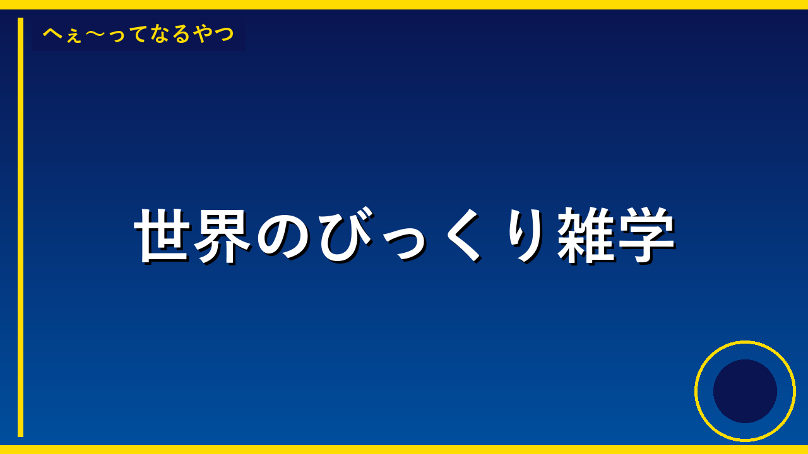

💡 トリビア・雑学
バナナは木じゃなくて草だった！意外すぎる植物学の真実
🎥 この内容を動画で見る
高さ9メートルにもなるバナナ。一見すると木のように見えるが、実は世界最大級の「草」だという。その驚きの構造と、スーパーに並ぶバナナの秘密とは？
私たちが普段から食べているバナナ。南国のイメージもあって「バナナの木」と呼ぶ人も多いが、実は植物学的には「草本植物」、つまり草の仲間に分類される。高さは9メートルにもなり、世界最大級の草として知られている。木と草の違いは「木質化した幹があるかどうか」で、バナナには木のような硬い幹が存在しないのだ。
さらに驚くべきは、太い茎のように見える部分の正体だ。これは「偽茎」と呼ばれ、実際には何十枚もの葉が幾重にも巻き重なってできている構造である。本当の茎は地下にあり、偽茎は葉鞘が層状に重なって筒状になっているに過ぎない。切ってみると玉ねぎのような層構造が観察できるという。
また、スーパーで売られているバナナのほとんどは「キャベンディッシュ種」という品種で、これらは種がなく、株分けで増やされている。つまり世界中のキャベンディッシュ種は遺伝的にすべて同じクローンなのだ。このため病気に弱く、かつて主流だった「グロスミッチェル種」が病気で壊滅した歴史もある。身近な果物にも、こんなに奥深い秘密が隠されているのだ。